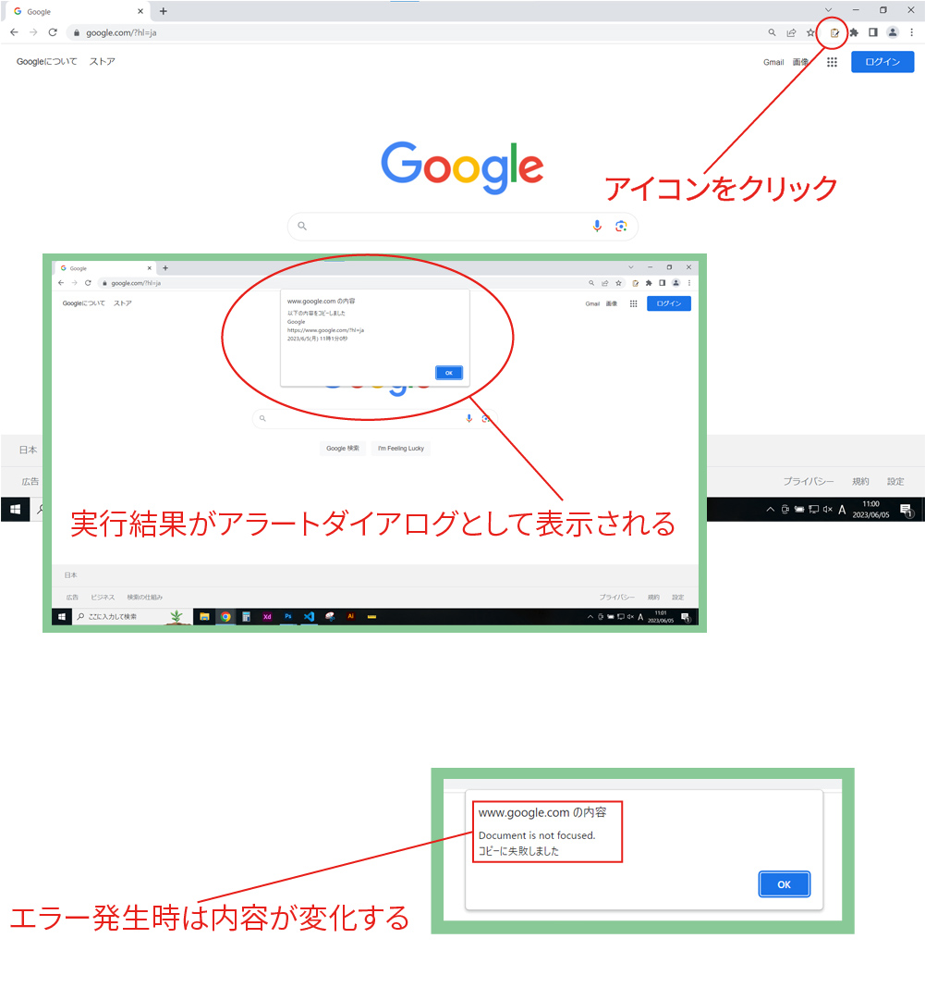

自主制作のGoogle Chrome拡張機能になります。
※ストア公開はしておりません
URL
https://github.com/HomareNakaoka/InfomationCopyTool
担当
デザイン・プログラミング
ツールの機能
拡張機能のアイコンをクリックすると今見ているページのタイトル・URL・現在の日時がクリップボードにコピーされます。
なぜ作ろうと思ったか
訓練校の課題でサイトを制作する際に、制作するにあたって使用した画像などのフリー素材や技術的に参考にしたサイトなどをプロジェクト単位でテキストファイルに記録しており、この作業を少しでも効率化したいと思ったため制作にチャレンジしました。
制作してみて
様々な課題が残るものの、初めて自分の考えたものをプログラムで形にできたという喜びを知ることができました。
制作時間
約16時間